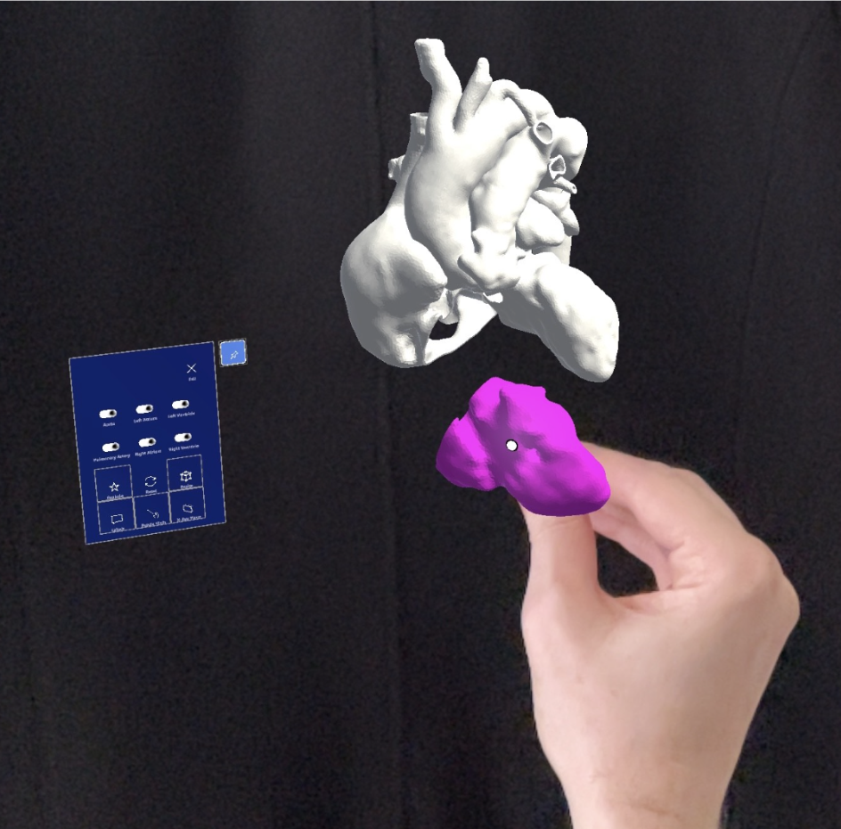
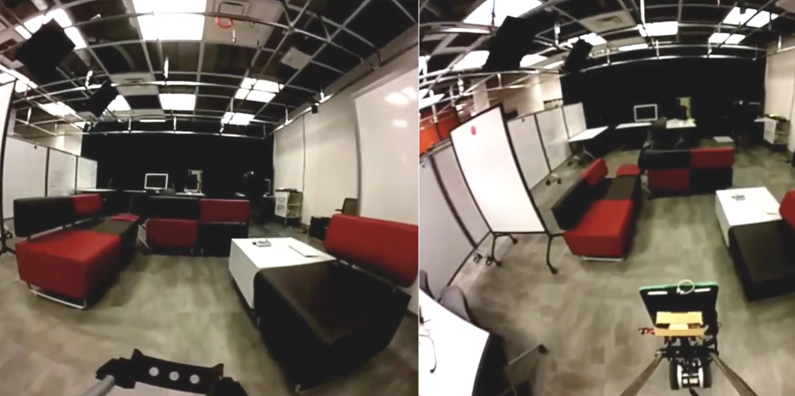
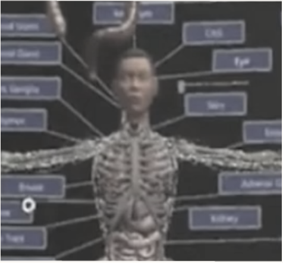
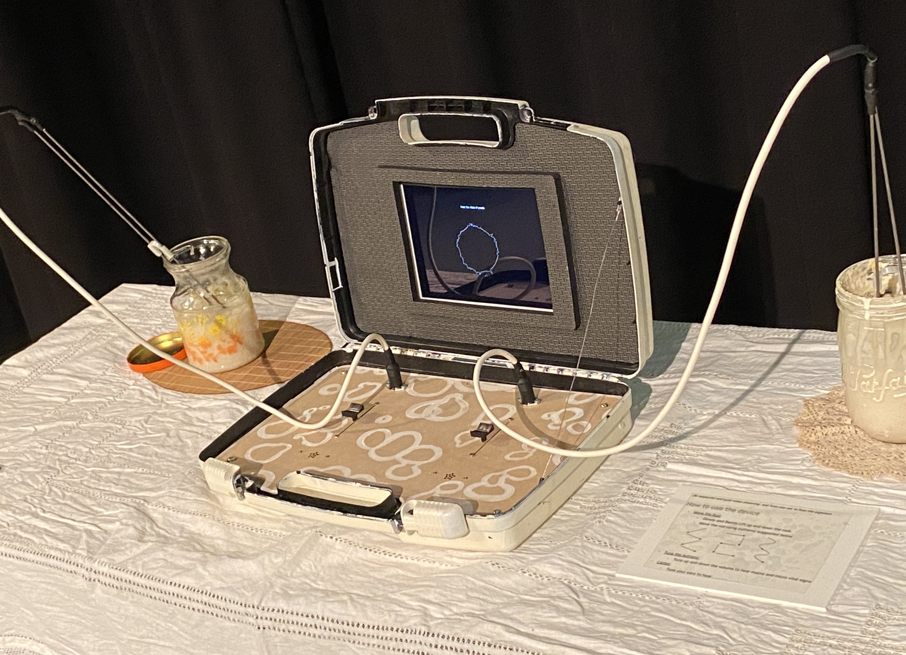
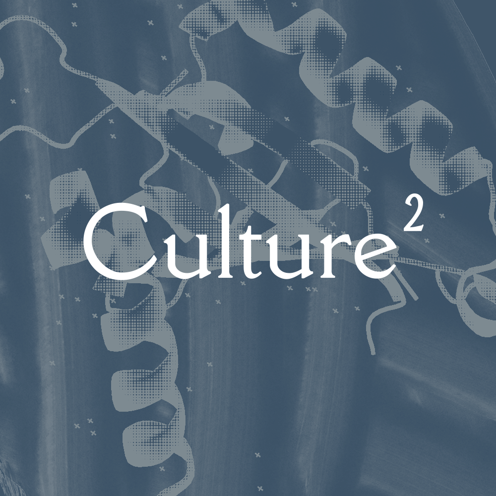
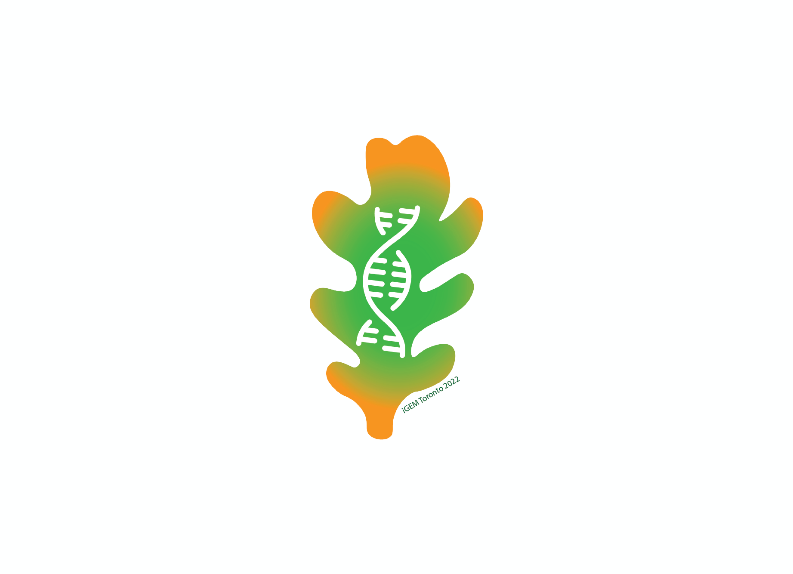
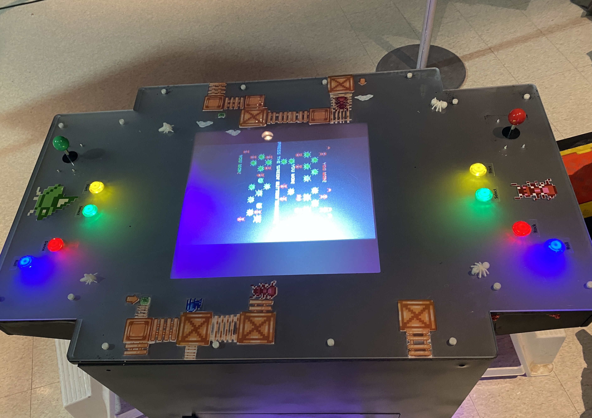

About
I'm a multidisciplinary designer exploring the intersection of physical fabrication, speculative futures, and digital interfaces. My practice combines storytelling with emerging technologies to make complex systems tangible and human.
Selected Projects
Highlights from recent collaborations and personal explorations.

MeTrA
A mixed-reality exploration of textile memories that translates motion into generative patterns.

RE/Portal
A speculative storytelling experience that invites communities to co-create alternate futures.

Grasping DNA
A tactile toolkit turning molecular biology into sculptural forms for science outreach.

Seen the Unforeseeable
Thesis installation illuminating the unseen infrastructures of data and climate.

Culture²
Workshops bridging bioart practices with neighborhood storytelling.

iGEM Toronto
Synthetic biology outreach materials created for the 2022 iGEM team.

Bugzilla
Two-player retro arcade experience highlighting the mutualistic relationship between treehoppers and ants.